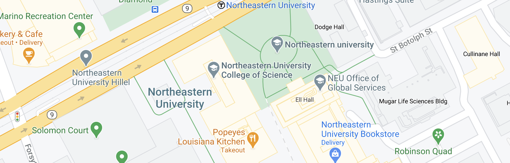

I would make an argument that the following work on Northeastern’s campus is not an original Banksy piece. Banksy is a British graffiti artist whose identity is unknown. Many of his pieces appear in public places and are easily distinguishable by certain factors. In earlier Banksy pieces, the work was easily distinguishable by a blocky signature. However, Banksy has stopped signing recent pieces - Banksy instead formed a non-profit called Pest Control that verifies which pieces are original Banksy works. However, the lack of indicators leads to the enigma - Which pieces are actually Banksy’s?
The content of Banksy’s work is satire involving war, capitalism, hypocrisy, and greed. In essence, Banksy spreads the message of several societal issues through cues in his art. Another similar piece called “Girl with Balloon” shows a black and white stenciled girl letting go of a heart-shaped balloon that is shaded in red. This work is featured on the Waterloo bridge in South Bank. In comparing this work to the one on Northeastern’s campus, there are subtle differences that support the argument that this is not a true Banksy work. One such is the stenciling. Although both pieces are similar in the sense that they have a heart and use the same colors, Banksy typically has a lighter stenciling style on his work. The lines in this specific work at NEU are quite thick and have too much weight for a traditional Banksy. In addition, the piece feels almost like propaganda with “I love Boston” rather than one that is giving an insight into societal issues. With these supporting points, the prerogative would be to assume that the piece is not a Banksy.